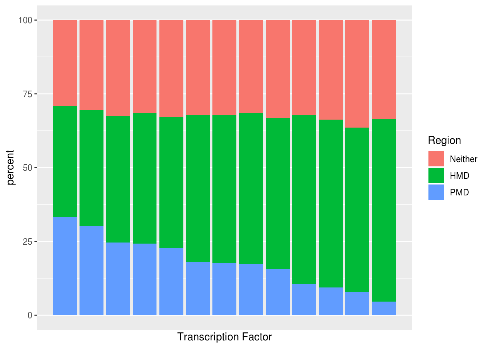

7: Transcription Factor Binding Sites
Kevin Brooks Henry
November 28, 2019
Last updated: 2019-12-13
Checks: 7 0
Knit directory: PMD_project_workflowr/analysis/
This reproducible R Markdown analysis was created with workflowr (version 1.5.0). The Checks tab describes the reproducibility checks that were applied when the results were created. The Past versions tab lists the development history.
Great! Since the R Markdown file has been committed to the Git repository, you know the exact version of the code that produced these results.
Great job! The global environment was empty. Objects defined in the global environment can affect the analysis in your R Markdown file in unknown ways. For reproduciblity it’s best to always run the code in an empty environment.
The command set.seed(20191128) was run prior to running the code in the R Markdown file. Setting a seed ensures that any results that rely on randomness, e.g. subsampling or permutations, are reproducible.
Great job! Recording the operating system, R version, and package versions is critical for reproducibility.
Nice! There were no cached chunks for this analysis, so you can be confident that you successfully produced the results during this run.
Great job! Using relative paths to the files within your workflowr project makes it easier to run your code on other machines.
Great! You are using Git for version control. Tracking code development and connecting the code version to the results is critical for reproducibility. The version displayed above was the version of the Git repository at the time these results were generated.
Note that you need to be careful to ensure that all relevant files for the analysis have been committed to Git prior to generating the results (you can use wflow_publish or wflow_git_commit). workflowr only checks the R Markdown file, but you know if there are other scripts or data files that it depends on. Below is the status of the Git repository when the results were generated:
Ignored files:
Ignored: .Rproj.user/
Untracked files:
Untracked: .gitignore
Untracked: code/
Untracked: data/Input/TFs/
Untracked: data/Input/wgEncodeRegTfbsClusteredV3.bed.gz
Untracked: data/Output/
Note that any generated files, e.g. HTML, png, CSS, etc., are not included in this status report because it is ok for generated content to have uncommitted changes.
These are the previous versions of the R Markdown and HTML files. If you’ve configured a remote Git repository (see ?wflow_git_remote), click on the hyperlinks in the table below to view them.
| File | Version | Author | Date | Message |
|---|---|---|---|---|
| Rmd | 19ceff7 | GitHub | 2019-12-13 | Add files via upload |
In this section I am adding transcription factor binding sites to the df.pairs.FINAL object. Here, it will be interesting to see if PMDs are enriched in any specific TFs, and if there is an association between these TF binding sites and the correlation coefficients obtained during the correlation testing. It is also interesting here to compare and see if CTCF binding sites are enriched here as they were in the ChromHMM annotations
Some background on TFs and TFs in prostate cancer (which informed which TFs I added to the data):
https://www.cell.com/cell/pdf/S0092-8674(18)30106-5.pdf http://perspectivesinmedicine.cshlp.org/content/early/2018/03/12/cshperspect.a030437
library(rtracklayer)
library(GenomicRanges)
library(splicejam)
library(dplyr)
library(ggplot2)
library(data.table)
library(DT)
library(ggrepel)load(file = '../data/Output/df_pairs_cor_methsd_chromhmm')
load(file = '../data/Output/GR_pairs_cor_methsd_chromhmm')
load(file = '../data/Output/regions')Transcription factor binding sites were obtained from the link below. Important to note though is that these are ALL binding sites across the hg19 genome, and peaks have been merged. This means that unlike the ChromHMM annotations earlier these are not necessarily prostate cancer specific.
TF database: http://tagc.univ-mrs.fr/remap/index.php?page=download
#I am now adding transcription factor binding sites to my "master" data object
TF.CTCF.gr <- import.bed("../data/Input/TFs/remap2018_CTCF_nr_macs2_hg19_v1_2.bed.gz",
genome = 'hg19')
Attaching package: 'Biostrings'The following object is masked from 'package:base':
strsplitTF.AR.gr <- import.bed("../data/Input/TFs/remap2018_AR_nr_macs2_hg19_v1_2.bed.gz",
genome = 'hg19')
TF.ETS1.gr <- import.bed("../data/Input/TFs/remap2018_ETS1_nr_macs2_hg19_v1_2.bed.gz",
genome = 'hg19')
TF.TP53.gr <- import.bed("../data/Input/TFs/remap2018_TP53_nr_macs2_hg19_v1_2.bed.gz",
genome = 'hg19')
TF.SP1.gr <- import.bed("../data/Input/TFs/remap2018_SP1_nr_macs2_hg19_v1_2.bed.gz",
genome = 'hg19')
TF.FOXA1.gr <- import.bed("../data/Input/TFs/remap2018_FOXA1_nr_macs2_hg19_v1_2.bed.gz",
genome = 'hg19')
TF.RB1.gr <- import.bed("../data/Input/TFs/remap2018_RB1_nr_macs2_hg19_v1_2.bed.gz",
genome = 'hg19')
TF.STAT1.gr <- import.bed("../data/Input/TFs/remap2018_STAT1_nr_macs2_hg19_v1_2.bed.gz",
genome = 'hg19')
TF.FOXJ2.gr <- import.bed("../data/Input/TFs/remap2018_FOXJ2_nr_macs2_hg19_v1_2.bed.gz",
genome = 'hg19')
TF.TAF1.gr <- import.bed("../data/Input/TFs/remap2018_TAF1_nr_macs2_hg19_v1_2.bed.gz",
genome = 'hg19')
TF.NRF1.gr <- import.bed("../data/Input/TFs/remap2018_NRF1_nr_macs2_hg19_v1_2.bed.gz",
genome = 'hg19')
TF.REST.gr <- import.bed("../data/Input/TFs/remap2018_REST_nr_macs2_hg19_v1_2.bed.gz",
genome = 'hg19')
TF.E2F6.gr <- import.bed("../data/Input/TFs/remap2018_E2F6_nr_macs2_hg19_v1_2.bed.gz",
genome = 'hg19')
TF.CEBPA.gr <- import.bed("../data/Input/TFs/remap2018_CEBPA_nr_macs2_hg19_v1_2.bed.gz",
genome = 'hg19')
TF.SPI1.gr <- import.bed("../data/Input/TFs/remap2018_SPI1_nr_macs2_hg19_v1_2.bed.gz",
genome = 'hg19')Once the data has been loaded I can use splicejam again to annotate df.pairs.FINAL with the binding sites. In this next code chunk I am also renaming the columns, assigning NAs to ‘X’ (I originally used ‘none’ however, because some of the TF names start with a letter after N this messes up my enrichment analysis, so I went with X to be safe), and changing the TF binding site columns to factors (instead of characters).
pairs.FINAL.gr <- splicejam::annotateGRfromGR(pairs.FINAL.gr,
TF.AR.gr)
pairs.FINAL.gr <- splicejam::annotateGRfromGR(pairs.FINAL.gr,
TF.CTCF.gr)
pairs.FINAL.gr <- splicejam::annotateGRfromGR(pairs.FINAL.gr,
TF.ETS1.gr)
pairs.FINAL.gr <- splicejam::annotateGRfromGR(pairs.FINAL.gr,
TF.SP1.gr)
pairs.FINAL.gr <- splicejam::annotateGRfromGR(pairs.FINAL.gr,
TF.TP53.gr)
pairs.FINAL.gr <- splicejam::annotateGRfromGR(pairs.FINAL.gr,
TF.FOXA1.gr)
pairs.FINAL.gr <- splicejam::annotateGRfromGR(pairs.FINAL.gr,
TF.RB1.gr)
pairs.FINAL.gr <- splicejam::annotateGRfromGR(pairs.FINAL.gr,
TF.STAT1.gr)
pairs.FINAL.gr <- splicejam::annotateGRfromGR(pairs.FINAL.gr,
TF.FOXJ2.gr)
pairs.FINAL.gr <- splicejam::annotateGRfromGR(pairs.FINAL.gr,
TF.NRF1.gr)
pairs.FINAL.gr <- splicejam::annotateGRfromGR(pairs.FINAL.gr,
TF.TAF1.gr)
pairs.FINAL.gr <- splicejam::annotateGRfromGR(pairs.FINAL.gr,
TF.CEBPA.gr)
pairs.FINAL.gr <- splicejam::annotateGRfromGR(pairs.FINAL.gr,
TF.E2F6.gr)
pairs.FINAL.gr <- splicejam::annotateGRfromGR(pairs.FINAL.gr,
TF.REST.gr)
pairs.FINAL.gr <- splicejam::annotateGRfromGR(pairs.FINAL.gr,
TF.SPI1.gr)
df.pairs.FINAL <- as.data.frame(pairs.FINAL.gr)
df.pairs.FINAL <- df.pairs.FINAL[ , c(1:18, 21, 24, 27, 30, 33, 36, 39, 42, 45, 48, 51, 54, 57, 60)]
names(df.pairs.FINAL)[16] <- 'PC3.annots'
names(df.pairs.FINAL)[17] <- 'PrEC.annots'
names(df.pairs.FINAL)[18] <- 'AR.binding.sites'
names(df.pairs.FINAL)[19] <- 'CTCF.binding.sites'
names(df.pairs.FINAL)[20] <- 'ETS1.binding.sites'
names(df.pairs.FINAL)[21] <- 'SP1.binding.sites'
names(df.pairs.FINAL)[22] <- 'TP53.binding.sites'
names(df.pairs.FINAL)[23] <- 'FOXA1.binding.sites'
names(df.pairs.FINAL)[24] <- 'RB1.binding.sites'
names(df.pairs.FINAL)[25] <- 'STAT1.binding.sites'
names(df.pairs.FINAL)[26] <- 'FOXJ2.binding.sites'
names(df.pairs.FINAL)[27] <- 'NRF1.binding.sites'
names(df.pairs.FINAL)[28] <- 'TAF1.binding.sites'
names(df.pairs.FINAL)[29] <- 'CEBPA.binding.sites'
names(df.pairs.FINAL)[30] <- 'E2F6.binding.sites'
names(df.pairs.FINAL)[31] <- 'REST.binding.sites'
names(df.pairs.FINAL)[32] <- 'SPI1.binding.sites'
df.pairs.FINAL[, 18:32][is.na(df.pairs.FINAL[, 18:32])] <- 'X'
#Have to convert them to factors after this step ^
#Also using 'X' instead of 'none' because alphabetically using none will make it so that the second half of my TFs show up SECOND instead of first (ruining the for loop below that I created)
cols <- colnames(df.pairs.FINAL[, 16:32])
df.pairs.FINAL[cols] <- lapply(df.pairs.FINAL[cols], factor)Now that the TF binding sites have been added to my main data frame, I can begin doing enrichment analysis.
#Need to do enrichment analysis on TF binding sites to see if PMDs are enriched in any in particular (maybe AR or CTCF?)
grouped.data <- data.frame(binding.site = rep(colnames(df.pairs.FINAL[18:32]), 3),
region = c(rep('commonHMD', 15), rep('commonPMD', 15), rep('neither', 15)),
count = NA,
total = c(rep(46854, 15), rep(14105, 15), rep(34817, 15)),
percent = NA)
for (i in 18:32) {
sum <- group_by(df.pairs.FINAL, df.pairs.FINAL[, i], region) %>% dplyr::summarise(count = n())
grouped.data$count[c(i-17, i-2, i+13)] <- sum$count[c(1:3)]
grouped.data$percent[c(i-17, i-2, i+13)] <- grouped.data$count[c(i-17, i-2, i+13)] / grouped.data$total[c(i-17, i-2, i+13)] * 100
}Once the enrichment data is summarized it can be plotted.
ggplot(grouped.data, aes(fill=region, y=percent, x=binding.site)) +
geom_bar(position="dodge", stat="identity") +
theme(axis.text.x = element_text(angle = 45, hjust = 1)) +
labs(x='Binding Site', y='Percent', fill='Region')
#Interesting, so the expected TFs don't show really any enrichment in PMDs
#TAF1 & NRF1 are known to only bind to non-methylated DNA, so it's interesting that they're enriched in PMDs
#https://www.ncbi.nlm.nih.gov/pmc/articles/PMC5559737/Weirdly it looks like none of the binding sites are enriched greatly in PMDs, even CTCF binding sites which was a bit surprising to me. However, given that the TF binding site data is for ALL peaks and is not necessarily PRAD specific, it makes sense as HMDs and neither regions cover a much larger portion of the genome.
I can look specifically at negatively correlated probe-gene pairs in PMDs and HMDs to see if there is any enrichment in specific TFs in negatively correlated regions, perahps these influence gene expression, etc.
#Now I will break up the enrichment above by region and correlation to see if there are any in PMDs or HMDs that stand out
PMD.corr <- subset(df.pairs.FINAL, df.pairs.FINAL$r <= (-.5) & df.pairs.FINAL$region == 'commonPMD')
HMD.corr <- subset(df.pairs.FINAL, df.pairs.FINAL$r <= (-.5) & df.pairs.FINAL$region == 'commonHMD')
region.grouped <- data.frame(binding.site = rep(colnames(df.pairs.FINAL[18:32]), 2),
region = c(rep('PMD', 15), rep('HMD', 15)),
count = NA,
total = c(rep(150, 15), rep(552, 15)),
percent = NA)
for (i in 18:32) {
sum <- summary(PMD.corr[[i]])
region.grouped$count[c(i-17)] <- sum[1]
}
for (i in 18:32) {
sum <- summary(HMD.corr[[i]])
region.grouped$count[c(i-2)] <- sum[1]
}
region.grouped$count <- as.numeric(region.grouped$count)
region.grouped$percent <- region.grouped$count / region.grouped$total * 100Once the data is collected it can be plotted.
ggplot(region.grouped, aes(fill=region, y=percent, x=binding.site)) +
geom_bar(position="dodge", stat="identity") +
theme(axis.text.x = element_text(angle = 45, hjust = 1)) +
labs(x='Binding Site', y='Percent', fill='Region')
Here once again it doesn’t look like any of the TFs I looked at are enriched in PMDs (the exception being FOXJ2 but I think there were only 1-2 sites so not really). Interestingly like the other enrichment figure above all of the TFs share the same pattern - I am hoping this is something inherent with the data and not a problem with my analysis, will have to ask Reka about this.
Below I am using a different set of TF binding sites that Reka sent me
Source: http://hgdownload.soe.ucsc.edu/goldenPath/hg19/encodeDCC/wgEncodeRegTfbsClustered/
#also importing them with fread from the data.table package, this works much faster than using rtracklayer and gives me a data table right away
TF.all <- fread("../data/Input/wgEncodeRegTfbsClusteredV3.bed.gz")
TF.all <- TF.all[, c(1:4)]
colnames <- c("chr", 'start', 'end', 'TF')
names(TF.all) <- colnames
TF.all.gr <- makeGRangesFromDataFrame(TF.all,
keep.extra.columns = TRUE,
seqnames.field = 'chr',
start.field = 'start',
end.field = 'end')
TFs.annot <- splicejam::annotateGRfromGR(TF.all.gr, regions)
df.TFs.annot <- data.frame(TFs.annot)
df.TFs.annot$TF <- factor(df.TFs.annot$TF)
df.TFs.annot$region <- factor(df.TFs.annot$region)
df.TFs.annot <- subset(df.TFs.annot, df.TFs.annot$region == 'commonHMD' | df.TFs.annot$region == 'commonPMD' | df.TFs.annot$region == 'neither')
sum2 <- group_by(df.TFs.annot, TF, region) %>% dplyr::summarise(count = n())
sum2$total <- rep(tapply(sum2$count, sum2$TF, sum), each=3)
sum2$percent <- sum2$count / sum2$total * 100
sum2$region <- gsub(x = sum2$region, pattern = 'commonPMD', replacement = '3.PMD')
sum2$region <- gsub(x = sum2$region, pattern = 'commonHMD', replacement = '2.HMD')
sum2$region <- gsub(x = sum2$region, pattern = 'neither', replacement = '1.neither')
sum2.pmd <- subset(sum2, sum2$region == '3.PMD')
sum2.pmd$rank <- rank(-sum2.pmd$percent)
sum2$rank <- rep(sum2.pmd$rank, each=3)
#axis.labs <- sum2
# Hide all of the text labels.
#axis.labs$TF <- ""
# Let's just label these items.
#ix_label <- c(1:5, 479:483)
#sum2$TF[ix_label] <- rownames(sum2)[ix_label]
ggplot(sum2, aes(fill=region, y=percent, x=rank)) +
geom_bar(position="stack", stat="identity") +
theme(axis.text.x = element_text(angle = 90, hjust = 1)) +
scale_x_discrete(name = 'Transcription Factor') +
scale_fill_discrete(name="Region",
breaks=c("1.neither", "2.HMD", "3.PMD"),
labels=c("Neither", "HMD", "PMD")) #+
The data table below shows all of the sums for each of the TFBSs from the analysis above used to plot the enrichment. (as well as showing their rank which is important for interpreting the above figure)
DT::datatable(sum2)Now I’m repeating the above figure but only looking at significantly negatively correlated promoters
neg.corr <- subset(df.pairs.FINAL, df.pairs.FINAL$r < (-0.3))
sig.neg.TFs <- subset(df.TFs.annot, df.TFs.annot$TF %in% neg.corr$symbol)
sum3 <- group_by(sig.neg.TFs, TF, region) %>% dplyr::summarise(count = n())
sum3 <- droplevels(sum3)
sum3$total <- rep(tapply(sum3$count, sum3$TF, sum), each=3)
sum3$percent <- sum3$count / sum3$total * 100
sum3$region <- gsub(x = sum3$region, pattern = 'commonPMD', replacement = '3.PMD')
sum3$region <- gsub(x = sum3$region, pattern = 'commonHMD', replacement = '2.HMD')
sum3$region <- gsub(x = sum3$region, pattern = 'neither', replacement = '1.neither')
sum3.pmd <- subset(sum3, sum3$region == '3.PMD')
sum3.pmd$rank <- rank(-sum3.pmd$percent)
sum3$rank <- rep(sum3.pmd$rank, each=3)
#Fix to get TF factor labels
ggplot(sum3, aes(fill=region, y=percent, x=rank)) +
geom_bar(position="stack", stat="identity") +
theme(axis.text.x = element_text(angle = 90, hjust = 1)) +
scale_x_discrete(name = 'Transcription Factor', labels = c('1'='GATA3', '2'='GATA2', '3'='BCL11A', '4'='BATF', '5'='SPI1', '6'='TAL1', '7'='RUNX3', '8'='MEF2A', '9'='STAT5A', '10'='CHD1', '11'='IRF1', '12'='HSF1', '13'='THAP1')) +
scale_fill_discrete(name="Region",
breaks=c("1.neither", "2.HMD", "3.PMD"),
labels=c("Neither", "HMD", "PMD"))
DT::datatable(sum3)TF.density <- regions
TF.density$tottfs <- countOverlaps(regions, TF.all.gr)
df.TF.density <- as.data.frame(TF.density)
ggplot(data=df.TF.density, aes(x=tottfs, group=region, fill=region)) +
geom_density(adjust=1.5, alpha=.4) +
xlim(0, 750) +
labs(x='TFBSs/100kb bin', y='Density', fill='Region')Warning: Removed 300 rows containing non-finite values (stat_density).
rm(cols, grouped.data, sum, i, TF.AR.gr, TF.CTCF.gr, TF.ETS1.gr, TF.TP53.gr, TF.SP1.gr, TF.FOXA1.gr, TF.RB1.gr, TF.STAT1.gr,
TF.FOXJ2.gr, TF.NRF1.gr, TF.TAF1.gr, TF.CEBPA.gr, TF.E2F6.gr, TF.REST.gr, TF.SPI1.gr, region.grouped, HMD.corr, PMD.corr, colnames, sum2)save(df.pairs.FINAL, file = '../data/Output/df_pairs_cor_methsd_chromhmm_TF')
save(df.TFs.annot, file = '../data/Output/df_TFs_annot_2')
sessionInfo()R version 3.5.2 (2018-12-20)
Platform: x86_64-redhat-linux-gnu (64-bit)
Running under: CentOS Linux 7 (Core)
Matrix products: default
BLAS/LAPACK: /usr/lib64/R/lib/libRblas.so
locale:
[1] LC_CTYPE=en_US.UTF-8 LC_NUMERIC=C
[3] LC_TIME=en_US.UTF-8 LC_COLLATE=en_US.UTF-8
[5] LC_MONETARY=en_US.UTF-8 LC_MESSAGES=en_US.UTF-8
[7] LC_PAPER=en_US.UTF-8 LC_NAME=C
[9] LC_ADDRESS=C LC_TELEPHONE=C
[11] LC_MEASUREMENT=en_US.UTF-8 LC_IDENTIFICATION=C
attached base packages:
[1] parallel stats4 stats graphics grDevices utils datasets
[8] methods base
other attached packages:
[1] BSgenome.Hsapiens.UCSC.hg19_1.4.0 BSgenome_1.50.0
[3] Biostrings_2.50.2 XVector_0.22.0
[5] ggrepel_0.8.1 DT_0.9
[7] data.table_1.12.6 ggplot2_3.2.1
[9] dplyr_0.8.3 splicejam_0.0.57.900
[11] rtracklayer_1.42.2 GenomicRanges_1.34.0
[13] GenomeInfoDb_1.18.2 IRanges_2.16.0
[15] S4Vectors_0.20.1 BiocGenerics_0.28.0
loaded via a namespace (and not attached):
[1] Biobase_2.42.0 httr_1.4.1
[3] tidyr_1.0.0 jsonlite_1.6
[5] viridisLite_0.3.0 R.utils_2.9.0
[7] shiny_1.4.0 assertthat_0.2.1
[9] GenomeInfoDbData_1.2.0 Rsamtools_1.34.1
[11] yaml_2.2.0 pillar_1.4.2
[13] backports_1.1.5 lattice_0.20-38
[15] glue_1.3.1 digest_0.6.22
[17] promises_1.1.0 colorspace_1.4-2
[19] R.oo_1.22.0 htmltools_0.4.0
[21] httpuv_1.5.2 Matrix_1.2-15
[23] XML_3.99-0 pkgconfig_2.0.3
[25] jamba_0.0.45.900 zlibbioc_1.28.0
[27] purrr_0.3.3 xtable_1.8-5
[29] scales_1.0.0 whisker_0.4
[31] later_1.0.0 BiocParallel_1.16.6
[33] git2r_0.26.1 tibble_2.1.3
[35] withr_2.1.2 SummarizedExperiment_1.12.0
[37] lazyeval_0.2.2 magrittr_1.5
[39] crayon_1.3.4 mime_0.7.1
[41] evaluate_0.14 R.methodsS3_1.7.1
[43] fs_1.3.1 shinydashboard_0.7.1
[45] tools_3.5.2 lifecycle_0.1.0
[47] matrixStats_0.55.0 stringr_1.4.0
[49] plotly_4.9.0 munsell_0.5.0
[51] DelayedArray_0.8.0 compiler_3.5.2
[53] rlang_0.4.0 grid_3.5.2
[55] RCurl_1.96-0 shinydashboardPlus_0.7.5.9000
[57] htmlwidgets_1.5.1 crosstalk_1.0.0
[59] labeling_0.3 shinyWidgets_0.4.9
[61] bitops_1.0-6 rmarkdown_1.16
[63] gtable_0.3.0 R6_2.4.0
[65] GenomicAlignments_1.18.1 knitr_1.25
[67] fastmap_1.0.1 zeallot_0.1.0
[69] workflowr_1.5.0 rprojroot_1.3-2
[71] stringi_1.4.3 Rcpp_1.0.2
[73] vctrs_0.2.0 tidyselect_0.2.5
[75] xfun_0.10